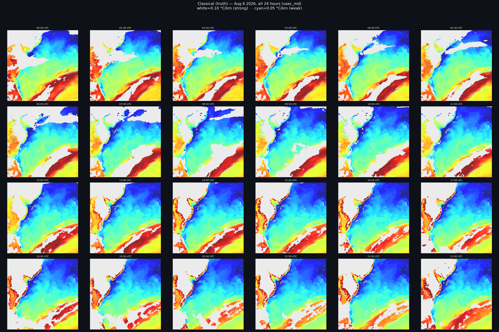

Aug 6 2026 SST Classical (truth) — usec_md
Same rendering style as the 8 AM contour_comparison.png: rainbow (jet) SST underlay,
white contours at 0.10 °C/km (strong fronts),
cyan dashed contours at 0.05 °C/km (weaker fronts) ·
24 hours, 570 fronts · peak 3.819 °C/km (h20, front #9)
All 24 hours (combined 4×6 grid)

Per-hour (click to enlarge)